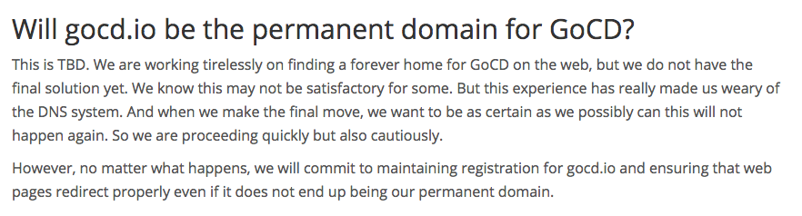

We’re overjoyed to announce that GoCD has found home at www.gocd.org!
Why did we move again?
During the holiday season last year, we made the decision to switch our main domain from go.cd to gocd.io, due to an issue with the DNS registrar. While this wasn’t ideal, we had to make a quick decision based on our available choices at that point. And so, we went ahead with switching to gocd.io even though it wasn’t ideal for us. Since then, we’d been searching for a more permanent home for GoCD.
This is from our post in January 2017.

Do I need to change anything?
No. Redirects will be set up to point to the new domain, and should not impact anything. However, we strongly encourage any third party apps or sites to use gocd.org going forward.
All links to any of our domains will continue to work and redirect you to gocd.org.
Will this now be GoCD’s forever home?
Yes! We are here to stay.
Thank you for supporting GoCD!